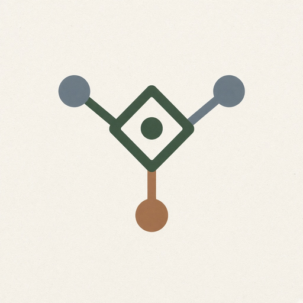

Phyllux apps hub
2. Decision and uncertainty
12 modules in this Suite family. Soft launch lists the map; depth grows as Suite modules ship.

7. Quantum Decision EngineDecision landscape instead of deterministic trees.8. Uncertainty ManagerPersonal or business decisions when information is incomplete.
9. Managing-by-Uncertainty DashboardExecutive style dashboard for uncertainty management.
10. Quantum Scenario PlannerMultiple plausible futures instead of one forecast.
11. Decision LandscapeMultidimensional visualization of a decision space.
12. Choice ExplorerSee how changing one assumption changes available choices.
13. Preference MapperMap preferences and how they change across contexts.
14. Judgment JournalLog decision, context, evidence, action, and outcome.
15. Decision Evolution TrackerCompare past beliefs with current beliefs.
16. Uncertainty HeatmapAttach uncertainty levels to every project component.
17. What Could Happen Next EngineEnsemble of potential nextings, not one prediction.
18. Multi-Perspective Decision AppSeveral agents evaluate one decision from different views.